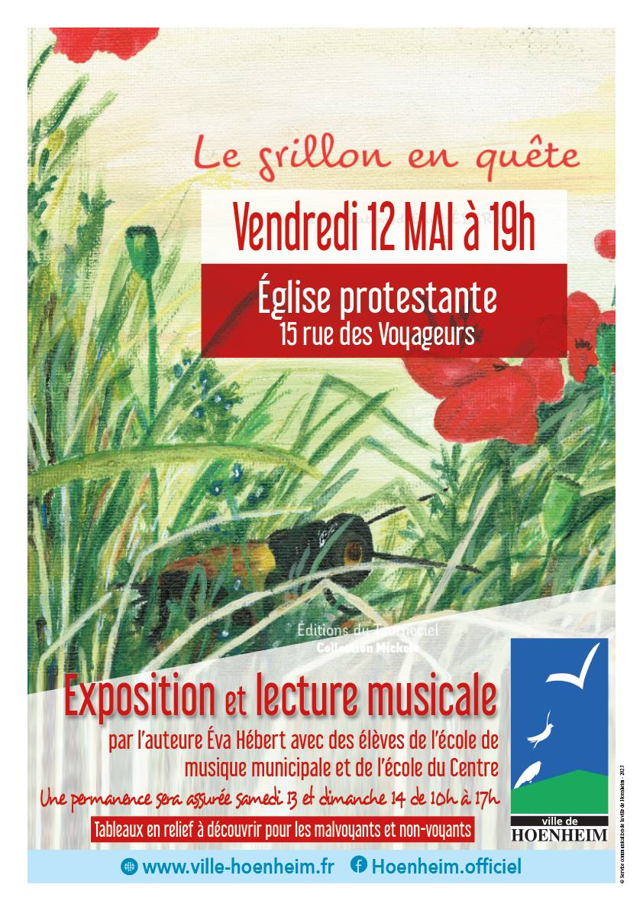

- Cet événement est terminé
Lecture musicale et exposition « Le grillon en quête »
12 mai 2023 à 19 h 00 min - 21 h 00 min
Navigation de l'événement

Que ce soit en ses qualités d’institutrice, puis de conseillère pédagogique en arts plastiques, ou simplement en tant que mère et grand-mère, Eva HÉBERT a toujours aimé transmettre ses connaissances et son savoir-faire.
Et elle continue à les partager avec beaucoup de joie, d’enthousiasme et la plus vive des sensibilités.
Eva HÉBERT, Hoenheimoise, vit à l’unisson avec la nature et allie la plume au pinceau pour donner à entendre le chant du grillon au cœur de sa belle et émouvante enquête.
Cet album, dont elle a fait les textes et les illustrations, a été réalisé au départ pour ses petits-enfants mais très vite un ami poète lui a proposé de l’éditer.
Avec ce livre philosophique l’auteur met en lumière et espère que « la beauté va sauver le monde ».
L’artiste, accompagnée d’élèves de l’école de musique municipale et de quelques élèves de l’école du Centre, vous propose une lecture musicale de son conte ainsi qu’une exposition de ses tableaux vendredi 12 mai à 19h à l’église protestante de Hoenheim.
Étant active depuis plus de vingt ans dans L’Art au-delà du Regard, une association qui a comme objectif de permettre aux non-voyants et malvoyants d’avoir accès à l’art, la nature et la culture, elle a réalisé des tableaux en relief à l’intention des aveugles ou malvoyants à découvrir lors de cette exposition.
Une permanence sera assurée samedi 13 et dimanche 14 mai de 10h à 17h. N’hésitez pas à venir rencontrer cette artiste hors du commun.